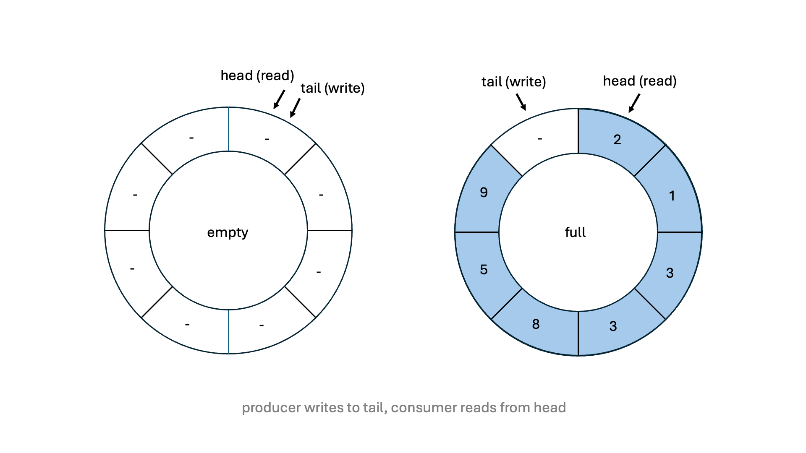

Building a lightning-fast, bounded, and Lock-Free single-producer single-consumer (SPSC) queue in C++.
Inspired by a low-latency C++ talk at my university I decided to build a single-producer single consumer queue, with the sole purpose of being insanely fast.
A single-producer single-consumer (SPSC) queue is a concurrent data structure, where one producer thread exclusively writes data to the queue and another consumer thread exclusively reads data from it. SPSC queues come in various forms. The implementation in this project uses a fixed-size circular buffer. This means, that once initialised, the queue's size cannot be changed. An illustration of this implementation is shown below:
std::atomic.
Modern CPUs store data in chunks called cache lines. False sharing occurs when two threads modify different variables that happen to reside on the same cache line. When one thread modifies one of the variables, the entire cache line is invalidated. Therefore, the other thread must reload the cache line, even if the variable it intended to modify was untouched. This leads to unnecessary contention and slows performance.
To avoid this we "pad" the variables with some dummy data in order to guarantee that they are located within different
cache lines. In C++ this can be done using alignas(std::hardware_destructive_interference_size).
This performs an aligment by the machines cache line size, which is usually 64 bytes.
Each time an element is pushed to the queue, the implementation checks if the queue is full,
while popping an element checks if the queue is empty.
These checks involve loading the atomic head and tail variables using m_head.load()
and m_tail.load().
These atomic loads
can introduce latency due to the cache coherency protocol.
When an atomic load is performed, the CPU may need to synchronize and validate the cache line across multiple cores,
leading to memory stalls and increased latency.
To address this, the SPSC queue uses the cached local variables m_head_cached and m_tail_cached,
reducing the need for frequent atomic operations and minimizing cache line traffic.
For larger queues this optimisation makes a huge difference. In such queues the likelihood of the head and tail pointers colliding is much lower and so these expensive checks can add unnecessary latency.
When looking at other SPSC queues, such as 'rigtorp' and 'folly', I noticed that they didn't seem to
use the modulo (%) operator for the circular 'wrap-around' logic. After doing more research I found
that this was a form of optimisation. The modulo operator is infact quite slow (in performance-critical code). This is because
the modulo operation performs integer division, which is not a simple operation like addition and can take many cycles.
To avoid this we can simply perform a check using an if-statement. We check if the tail pointer is now at the last position
in the buffer and if true, we reset the pointer to 0.
Benchmark results on an Apple M4 (10 Core) processor. On one thread, the producer places items (integers) onto the buffer and on another thread the consumer retrieves these items. The throughput of each queue is calculated as follows:
\[ \text{Throughput} = \frac{\text{Items Processed}}{\text{Time}} \]
Time periods were measured using std::chrono and throughput was averaged over 1000 total runs for each
queue size.
From the graph above we can see that our queue (named PikaQ) has roughly twice the throughput of both the folly and boost queues over over a variety of queue sizes, ranging form 10 - 1 million items. This of course is great and shows that PikaQ achieves its target of being super fast, but it does so at a cost. Boost and folly provide additional safety features and functionality which make these queues much better suited for professional development. This additional 'overhead' may be a large factor in the performance difference between the queues.
Below are a list of resources that I found useful over the course of this project.